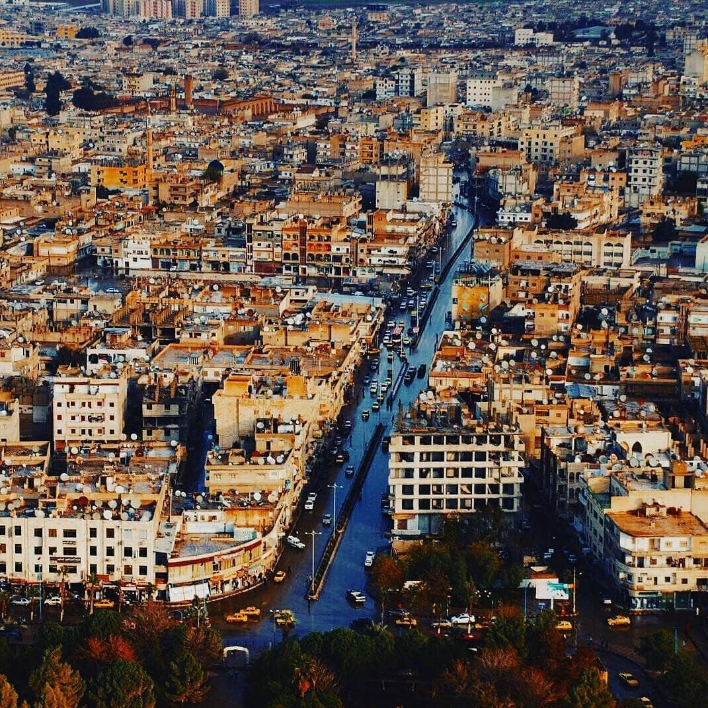

محافظة الرقه
: تفاصيل عن محافظة الرقه
محافظة الرقة هي محافظة في شمال وسط سوريا على الضفة الشمالية لنهر الفرات، على بعد 200 كم شرق مدينة حلب
. منذ أواسط السبعينيات يعتمد اقتصاد الرقة على سد الفرات وعلى الزراعة وعلى الحقول النفطية المجاورة
. في الرقة متحف تاريخي صغير يسمى متحف الرقة، وشارع شعبي هو شارع القوتلي (السوق الشرقي) الأكثر شعبية في المدينة.
